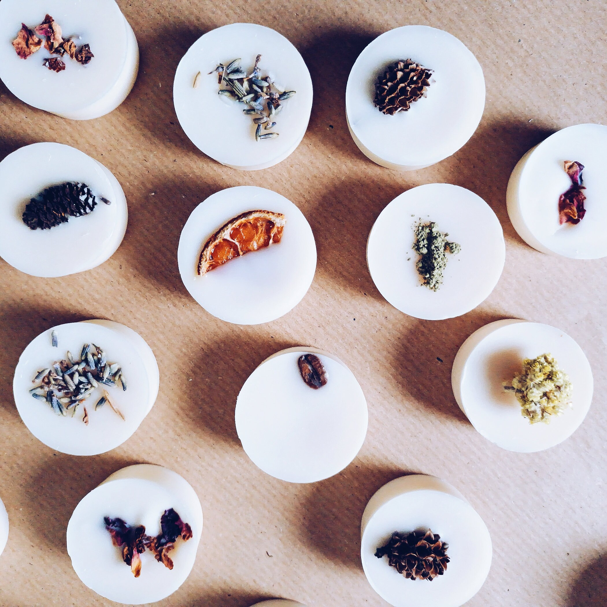
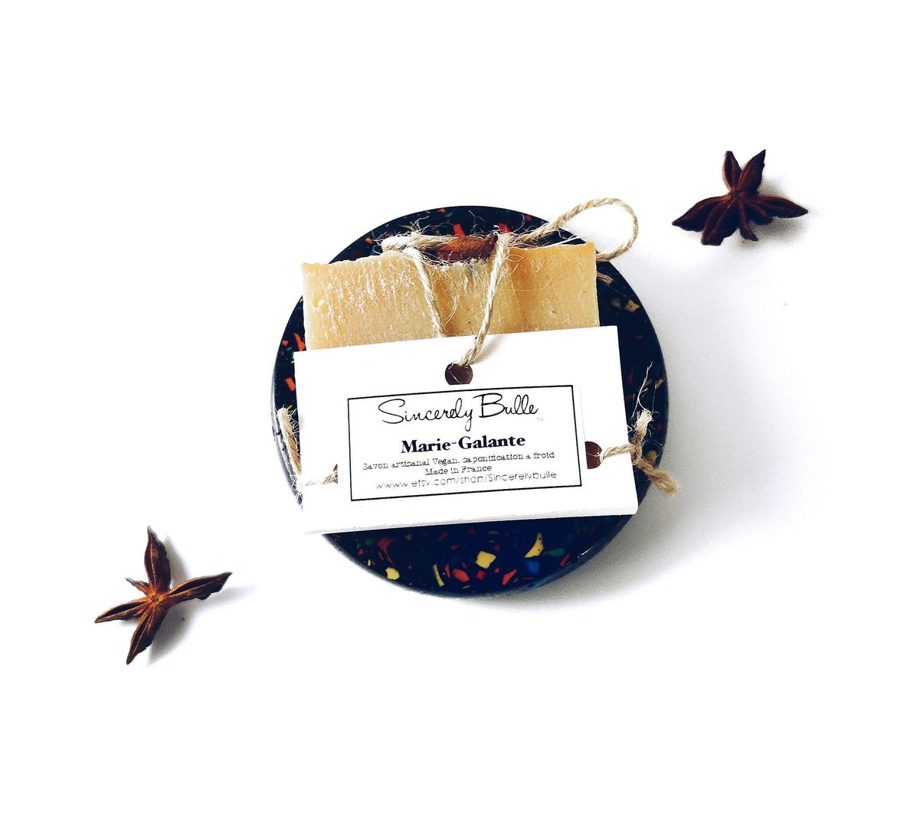

Bienvenue chez Sincerely Bulle !
Maitre cirier et spécialisée dans la création artisanale d'objet
décoratif éco-friendly, sur mesure, chaque pièce est fabriquée à la main
dans notre atelier du Val d'oise.

Fait à la main par Émilie
Réalisée en résine acrylique technique, cette matière est semblable au marbre par son aspect. Elle est écologique, sans composant toxique ni chimique.
Les lampes sont teintées dans la masse et poncées manuellement dans notre atelier — chaque pièce est unique.
Les détails comptent : fil de tissu tressé, interrupteur et fiche prise au look vintage, le tout Made in France.

Un nettoyant naturel pour tapis de yoga pensé comme un véritable rituel. Il purifie, rafraîchit et laisse une senteur subtile qui accompagne votre pratique.
Formulé à partir d’ingrédients soigneusement sélectionnés, respectueux de la planète, de l’humain et des animaux.
Un geste simple pour un tapis propre et une pratique plus consciente.

Savon artisanal saponifié à froid, fait par Émilie .
Enrichi en huile d’amande douce, huile de coco, beurre de karité et huile d’olive, il nettoie délicatement tout en respectant l’équilibre naturel de la peau grâce à son pH doux.
Son parfum chaud et épicé, mêlant clou de girofle, poivre et vanille, est subtilement adouci par le lait d’amande pour une sensation enveloppante et réconfortante.
Élaboré selon le procédé traditionnel à la soude, à partir d’ingrédients soigneusement sélectionnés.
Découvrez nos savons.
© 2026 Sincerely Bulle – Tous droits réservés.
Conception, développement, direction artistique, contenus et
photographies réalisés par Émilie créatrice de Sincerely Bulle.
L’ensemble de ce site est protégé par le droit d’auteur. Toute
reproduction, représentation ou utilisation, totale ou partielle, sans
autorisation préalable est interdite. Voir
Mentions Légales .
Pour toute commande,
La boutique sur Etsy
Ce que nos clients pensent de Sincerely Bulle
Encore de superbes produits de la part de Émilie. A quand une boutique physique pour toutes ses merveilles !!! Un énorme merci ❤❤❤
— MargotLes bougies d'Emilie et Bulle sont devenues une tradition chez moi. À chaque occasion sa bougie, et à chaque fois c'est le même bonheur de voir à quel point la qualité ne change pas.
— InsanetoyMon avis concerne la totalité de ma commande. Tout est vraiment fait à la perfection, du produit à l'emballage. Les finitions et les odeurs sont impeccables. Une boutique Etsy préférée, j’y retournerai pour les cadeaux 🙏🏼 merci encore 😊.
— Agathe